Can you tell us the neighborhood you live in? Where are your favorite places?
(Lauren)
I live in Altadena, California, in San Gabriel Valley at the foothills of the Angeles National Forest. Some walking distance favorite places are Christmas Tree Lane with its annual tree lighting ceremony, and Roma Market with its famous
sandwich. Driving distance favorites are too many to list: 99 Ranch; Atlantic Times Square; Camellia Square; the classics Din Tai Fung, Hai Di Lao, and Meizhou Dongpo; Young Dong Tofu; Kee Wah Bakery; and my top night out combination of Mian
and Blackball. Just to name a few.
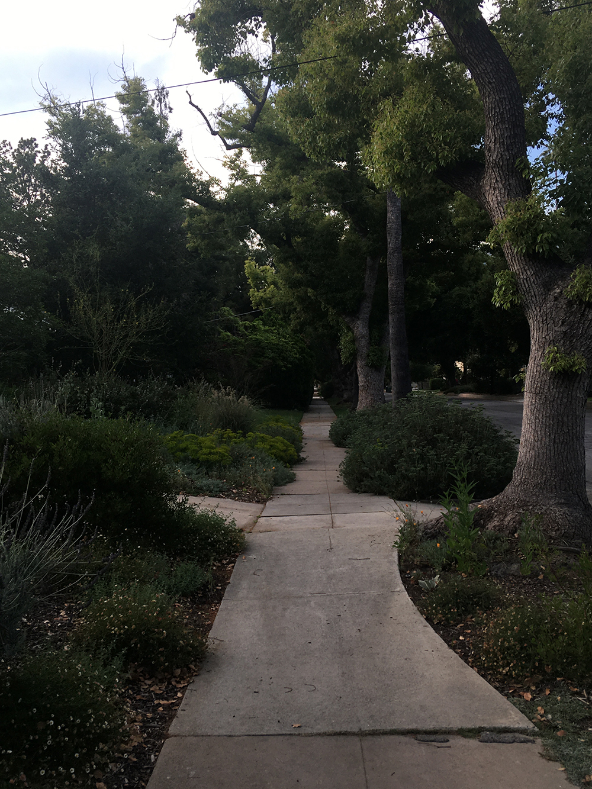
1. Catalina Avenue
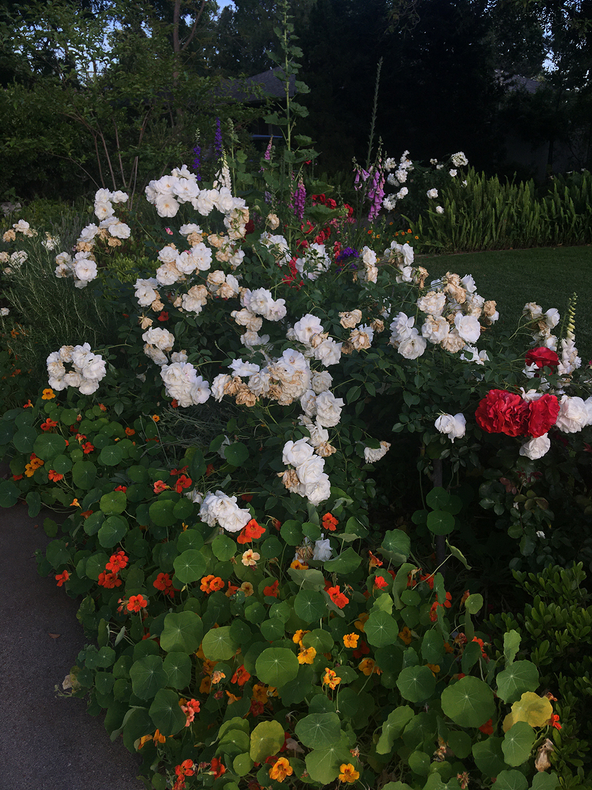
2. Elizabeth Street
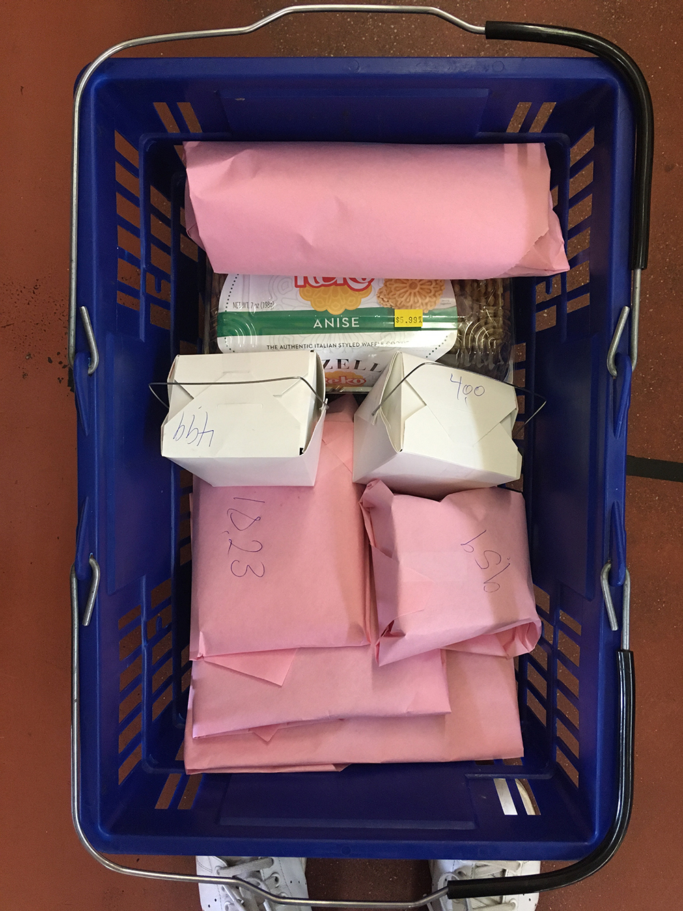
3. Roma Market
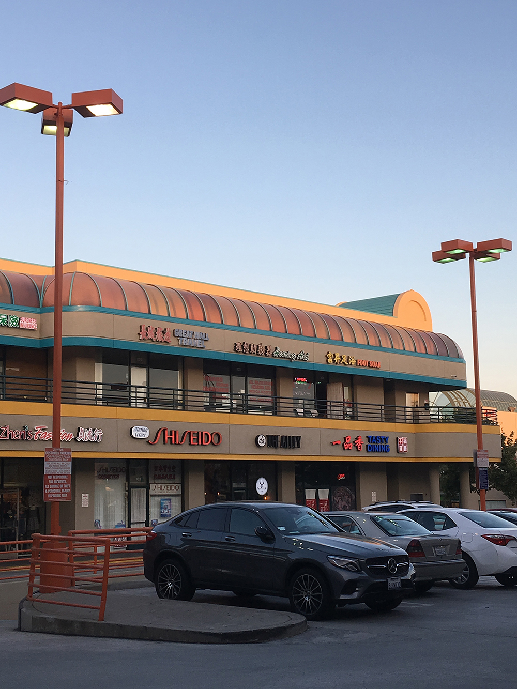
4. Prospect Plaza, San Gabriel
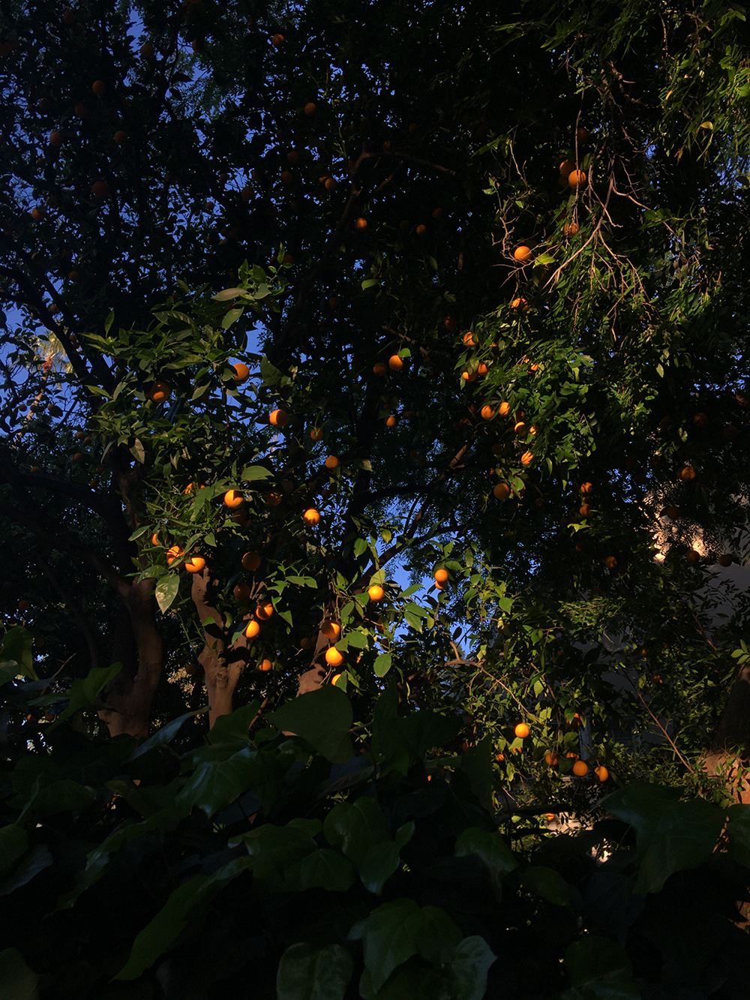
5. Oranges on Catalina
<
>
Is there any fun art/cultural community around you? Do you often join their activities?
I’m a graphic designer at the Hammer Museum in Los Angeles, so it naturally forms a valuable part of my community here. The UCLA Film and Television Archive shows great, often hard to find films in the museum’s theater: biennials of new
Chinese and Taiwanese cinema, and a screening in 2017 of Barbara Loden’s Wanda (1970) that became the basis of my research for a Kima book on the subject.
My friends are also all incredibly talented people, and I cherish the collaborative work that evolves out of our conversations and time spent in each other’s company. They also have a gift for bringing people together through spaces like
Young Art and Mrs Wong’s, and I always look forward to seeing what they do next.
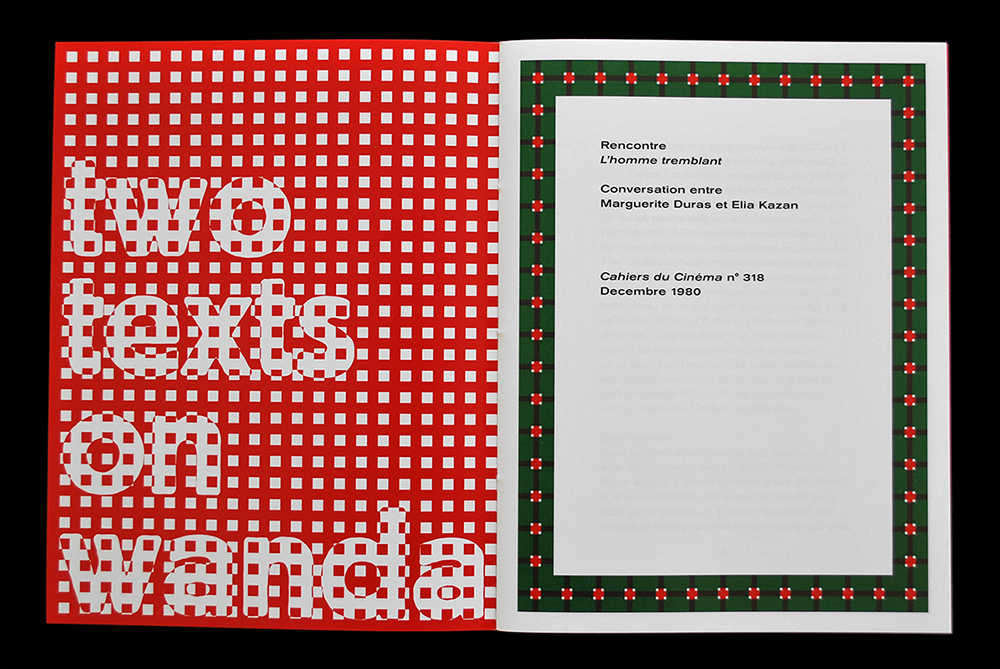
6. Two Texts on Wanda, 2017
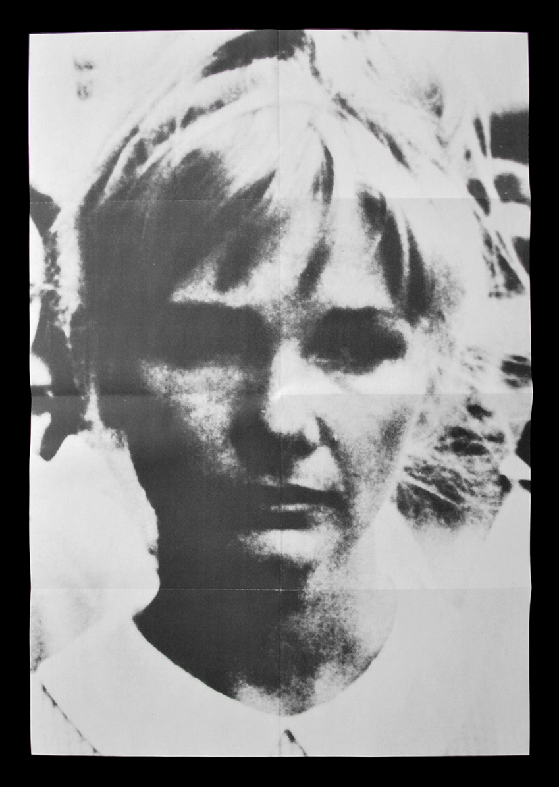
7. Two Texts on Wanda foldout poster dust jacket
<
>
We are excited about the Kima Book you collaborated with Caodi! Could you tell us any story behind it?
We had been talking for a while, and our conversations always seemed to drift to the topic of food. It was clearly something he has a passion and skill for, so I asked what he thought about the idea of doing a recipe book. It’s a collection
of simple, everyday dishes, made and photographed by Caodi in his home where his grandmother used to live. Through this collaboration we learned about each other’s families and the role of cooking within them.
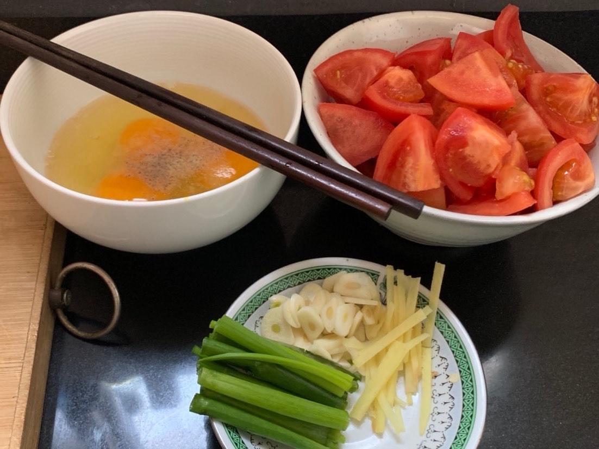
8. Caodi cooking at home
 9. Simple Chinese Home Cooking, 2020
9. Simple Chinese Home Cooking, 2020
 10. Simple Chinese Home Cooking, 2020
10. Simple Chinese Home Cooking, 2020
 11. Simple Chinese Home Cooking, 2020
11. Simple Chinese Home Cooking, 2020
<
>
Which Chinese food do you like the best?
Growing up my mother cooked a bitter melon dish with ground pork and toasted black sesame seeds that I loved. Any combination of soup and noodles; mi xian when arriving in Kunming in 2016 and guo qiao mi xian when leaving. Also dou hua.
12. Mi xian in Kunming
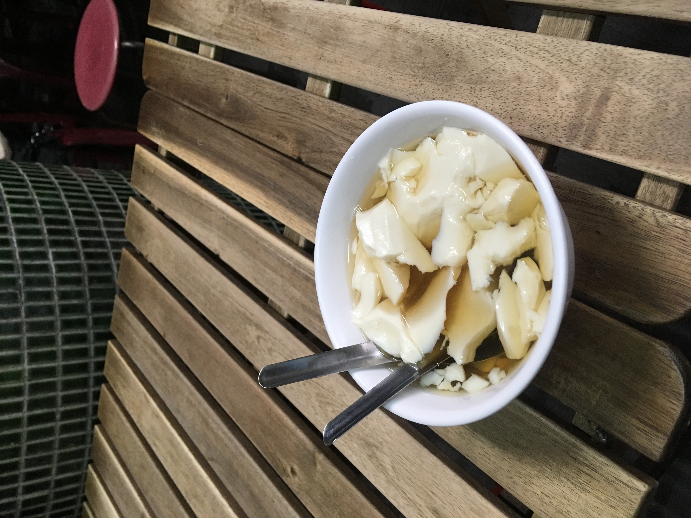
13. Dou hua in Taipei
<
>
What’s the most relaxing and chill thing for you to do in everyday life?
Shopping—not necessarily buying, just looking and sorting. I get it from my mother who gets it from her mother.
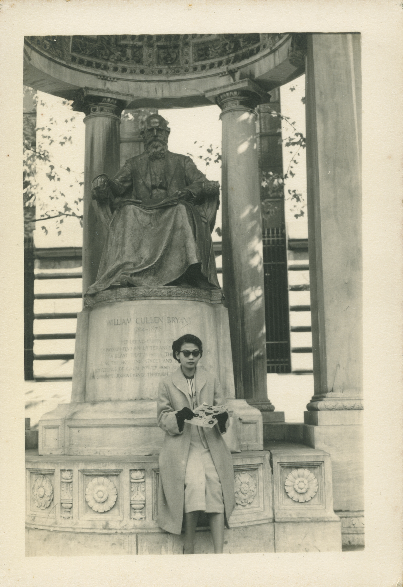
14. Guama in New York, 1940s
We are also curious about your daily working mode. How you keep balance between commissioned work, personal project, and hobby?
I don’t have a planned working mode, nor do I keep any kind of schedule. My portioning of time fluctuates between commissions and publishing, and I release Kima editions when they’re ready. Sometimes the process is a few months, other times
over a year. My main focus is always on forming ideas and relationships, and never on setting deadlines. I have a small office room in my house that functions as design studio, print workshop for silkscreening and bookbinding, and photo
studio for documentation. I prefer the flexibility of working from home, and have never kept a more formal studio space. I’m not much of a hobby person, but I do take a ballet class. It’s something I’ve studied since childhood, and is
essentially the only form of exercise I enjoy.
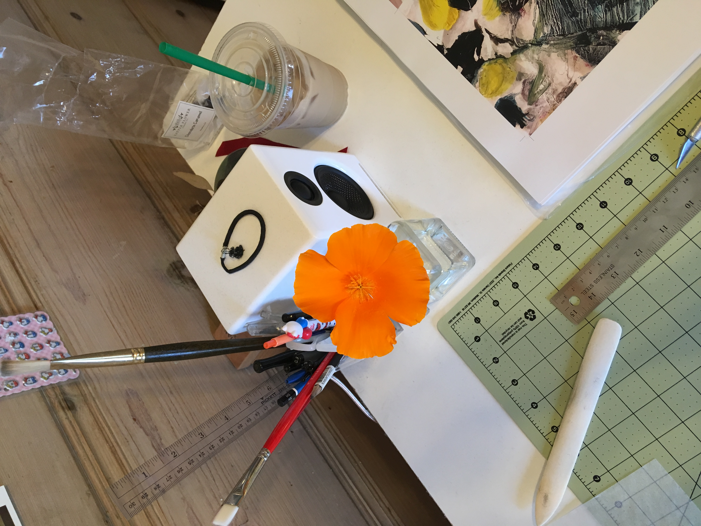
15. Studio
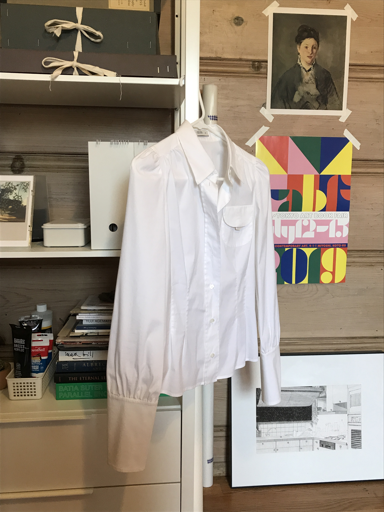
16. Studio
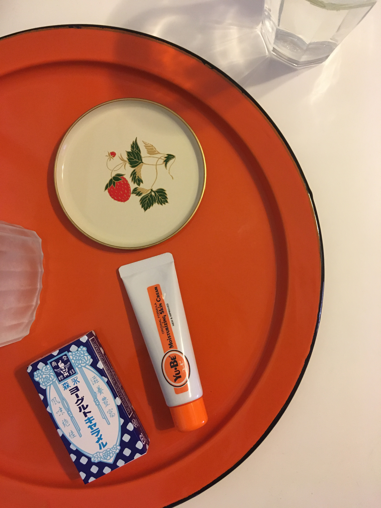
17. Studio
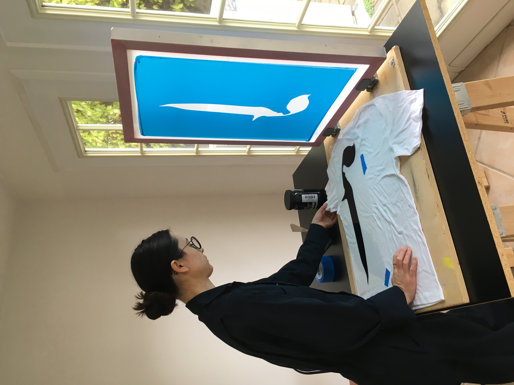
18. Sun room
<
>
Is there any on-going project that you would like to share with us?
I started a new publishing project this year called Cherry with filmmaker and graphic designer Nathan Rickard. The imprint is a series of photographic diaries
by artists, friends, and family that documents individual observations on daily life. They aren’t necessarily photographers by profession, just people around us who we noticed at one point or other take great photos that we appreciate and
want to share.
Could you share with us an object, a book or film that you especially like recently?
Always rewatching Apichatpong Weerasethakul’s Tropical Malady (2014), it leaves an impression on me every time. I’ve been reading the collected writing of Esther McCoy, keen storyteller, architectural historian, and sometime draftsman who wrote
extensively on southern California architecture during the birth and rise of midcentury modernism. I was also introduced this summer by friend and fellow designer, Connie Chang, to the gratification of estate sale auctions as a way of
researching and collecting Chinese artifacts, most recently a set of cloisonné enamelware bowls.
 20. Cloisonné enamelware
20. Cloisonné enamelware
Last question, what is your favorite Chinese song?
I’d be remiss—though it’s a little predictable—if I didn’t mention Wakin Chau’s song “Friends.” It was one I learned in middle school Chinese class, timidly singing from my desk thinking it was the most beautiful song. As far as current
favorites, Chyi Yu singing “Olive Tree,” Yoona’s cover of “A Little Happiness,” 紫丁香, 采红菱, Teresa Teng singing “Forget Him,” Faye Wong and Na Ying singing “Years.”
Lauren Graycar is a graphic designer and publisher. She has collaborated with a range of creative concerns in Los Angeles—where she lives and works—on projects across traditional and
new media. Since 2013 she has run the publishing imprint Kima.